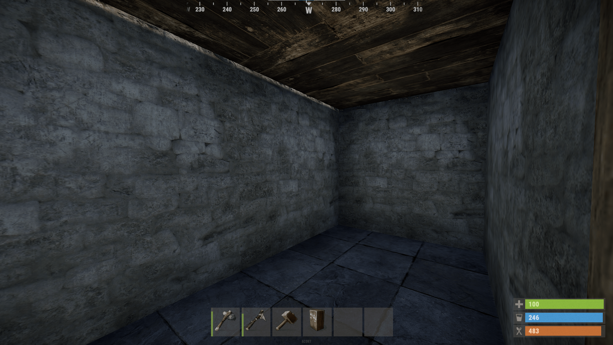
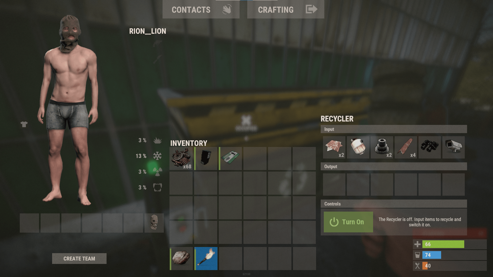

※こちらのページはps4版の方でもお楽しみいただけます。
ロードが長い
サーバーに入るときにはもちろんロードがあります。他のゲームに比べてRustはアイテムや施設の量が大きいので ロードにかなり時間がかかります。※なのでゲームをインストールする際はSSDがおすすめ
だいたい1~3分ほどなので待ちましょう。

ゲームの始まり
ロードが終わるとだいたい海の近くにスポーンします。眠った状態で始まるので何かキーを押して起こしてあげてください。
起きると始めに岩と松明を持っています。マウスのホイールを使ってアイテムを選択した後、岩は左クリックで打撃、 右クリックで投げモーション、右クリックしたまま左クリックすると投げることができます。
松明は右クリックでつけることができます。
採集
始めに岩を使って家を建てたり、ツールを作るための資源を入手しましょう。

画像に映っている白い物が石です。他の岩を見分けるのが最初は難しいですが、白くて一部光ってる部分があるものが石です。
光ってる部分を叩くと効率よく石を採集できます。また採集していると小さくなって最後にはなくなってしまいます。
マップのあらゆる場所に生えてる木は採集可能で、一度殴ると赤く×のついたマーカーが出てきます。このマークの部分をたたくことで石と同様、効率よく採集できます。

また草むらに生えてる麻は服を作ったり寝袋を作るのに必要なので木や石を採集しながら最低3つ採集しましょう！
石と木が集まったらツールをクラフトしましょう。Qキーを押してクラフト画面に移動し、TOOLSにある石斧(STONE HATCHET)と 隣にある石のつるはしを作成しましょう。
ツールを作成すると採集効率が格段に上がるのと、採集量が増えます。また近接武器としても使えるので作るに越したことはありません。

ツールを作ったら木と石と麻を採集し、画像内のアイテム（工具棚、ハンマー、鍵、木のドア、建築計画書、寝袋を作成しましょう。 また家を作るために石と木が必要です。

準備が出来たら建築計画書を持ち、土台を建築しましょう。
建築計画書を持ったまま右クリックをホールドすると土台一覧が出てきて、選択できます。まずは四角い土台を画像のようにおいていきましょう。
またハンマーを持って枝でできた壁に近づき、右クリをホールドすると土台や壁の強化ができます。枝の土台、壁の耐久は10で すぐに壊されるので木か石で強化しましょう。

強化が完了したら工具棚を拠点の好きな場所におきましょう。
※工具棚は拠点の中で最も大切なのでできるだけ壊されにくい場所においてください。

次は三角の土台を使って入り口を作りましょう。好きな場所に ドアウェイ （ドアをつけるようにくりぬかれた壁）を建築してドアを設置しましょう。
ドアを設置したら次は鍵をつけましょう。鍵はドアに近づいて左クリックで設置できます。デフォルトでロックはかかるようになっています。鍵の部分が 赤くなっていたらロックされているのでご安心を。

ここまで出来たら拠点の好きな場所に寝袋をおきましょう。万が一死んでしまった場合もここでスポーンできるようになります。
またこのあたりで右下の体力ゲージと空腹ゲージが少なくなっていることでしょう。※主は撮影のため回復した状態になっています。
もし体力が少なくなって画面に血の色が増えてきた場合はどこかで死んで再スポーンし、ゲージを回復するのもありです。※死亡できる場所がない場合は最悪、 F1を押してkillと入力し、エンターを押すと自殺できます。よく使うコマンドなので覚えていて損はありません。

最後に超重要なことを伝えます。Rustでは拠点を維持するために家賃のようなものが必要です。 工具棚 (大きい箱のようなもの)に近づいて開くと、cost per 24 horsと書いてある分の資材を工具棚に入れましょう。 こうすることで家が風化しません。
鉄とスクラップを集めよう！
まず前提として、スクラップというものはRust内での通貨です。ゲームのアイテムなのですが、スクラップさえあればなんでもできます。 素材だって買えるし、武器だって買える。何をするにも作るにもスクラップは必要なのです。
今からそのスクラップの集め方を説明します。
まずはスーパーマーケット かガソリンスタンドを目指しましょう。マップを見たら書いてあるはずです。
そしてその道中でこのような箱を見つけたら中を開けてアイテムを取り出しましょう。基本アイテム+スクラップ5こが入っています。
またついでにドラム缶を叩くことをおすすめします。すこしでもいいので壊してアイテムを得ることで後々楽になります。

スーパーマーケットもしくはガソリンスタンドに到着したら中に入って小部屋までいき、この緑のボックスがあるか確認しましょう。 通称:武器ボックスと呼ばれ高確率で武器が入っており、入っていなくてもレアアイテムがよく入っています。そしてそのすぐ近くの机に緑のキーカードがあるのでこれも入手しておきましょう。

ちなみに建物内にはこのようなボックスの中に食べ物が入っているのでぜひ取っておきましょう。

そのあとは建物の裏(スーパーマーケット)、建物の中(ガソスタ)にあるリサイクラーを使用して集めた物を分解しましょう。
リサイクルが終わると鉄やスクラップがもらます。使い道はいろいろありますが序盤は「鉄のドアを作って設置する」
(木のドアなら叩いて簡単に壊されるので鉄にしておかないと次の日には家がなくなってたりします
)「エオカピストルを作る」( 序盤でかなり使える武器、
油断してる相手の頭にずどんで成り上がりも可能です。)「ワークベンチレベル1を作る」(ワークベンチ1があるとネイルガンやボウガンが作れるようになるので普通にありです。)があります。
途中で銃などを見つけた場合はリサーチテーブルを作ってレシピのするのもありです。